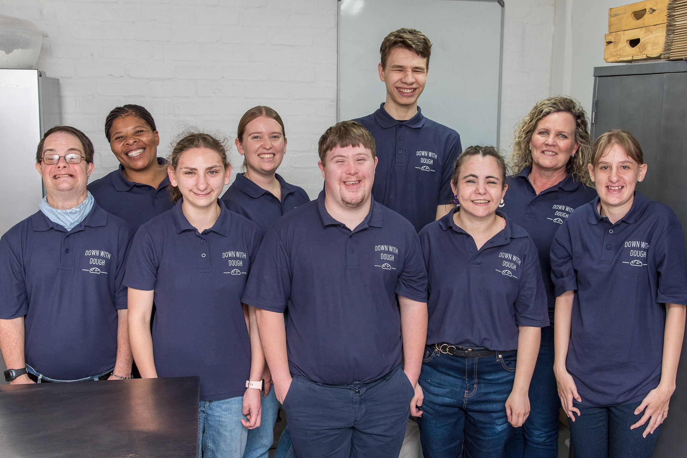

Our vision and ultimate goal is to train and upskill young adults with intellectual disabilities for meaningful work placement, furthermore encouraging a life of appropriate independence.

Having a son with Down syndrome opened our eyes to the lack of suitable facilities and infrastructure after school. Moving into adulthood, young adults with intellectual disabilities have limited possibilities. If we could change this for Joshua, and others in the Northern Suburbs community, it would equip them for a future where they could work and contribute to society around them in a meaningful way.

Founder & CEO of Down With Dough
Our proven training and personal development programme equips young adults with intellectual disabilities, between 18-30 years of age, for successful placement in a work environment. Through our baking process and group sessions we train our members with
the basic skills needed for employment. Interactions would revolve around topics such as communication, appropriate behaviour and personal hygiene. We aim to source appropriate work opportunities, tailored to suit our member's
abilities and the requirements of the employer.
This process includes various assessments and work exposure in different environments. Once placed, on-going support is provided to both the member and employer, to ensure sustainable
employment and work satisfaction. We will continually strive to provide varied possibilities for accommodating all our members; keeping them stimulated and included in a safe, friendly, and social environment.